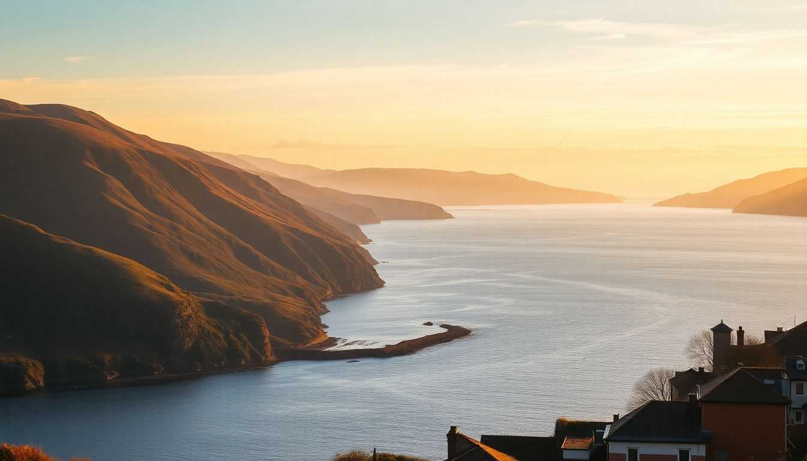

Best Day Trips from Edinburgh: Highlands, Lochs & St Andrews

I’ve done all three of these day trips from Edinburgh in the last two years — twice with tour groups, once by rental car. Each one is doable in a single day, but they’re very different beasts. Here’s what actually worked, what didn’t, and where I’d skip the hype.
Why take a day trip from Edinburgh instead of staying put?
Edinburgh is compact. After three days of Royal Mile crowds and castle queues, you’ll want fresh air. The train to Glasgow takes 50 minutes, but the real payoff is north and west — lochs, glens, and a medieval university town that feels a century removed from the capital’s festival chaos. I found that even a rushed day out resets your perspective on Scotland’s scale.
- Scottish Highlands: You’ll see Glen Coe, Rannoch Moor, and often a loch stop. It’s a long day (12 hours), but the scenery is unique.
- Loch Lomond & The Trossachs: Closer to Edinburgh (1.5 hours by car), easier for a half-day or relaxed afternoon.
- St Andrews: Train or drive east. Flat, coastal, and packed with golf history plus a ruined castle overlooking the North Sea.
What’s the best way to see the Scottish Highlands in a day?
Book a small-group tour, not a 50-person coach. I used Rabbie’s (max 16 people) for a Glen Coe and Loch Lomond combo. The driver-guide knew exactly where to pull over for photo stops without the tourist-jam crowds. We hit Glen Coe first — the sheer scale of the valley is humbling even in rain. Then Rannoch Moor, which looks like a desolate peat bog but has a stark beauty. Lunch stop was at The Real Food Café near Tyndrum — decent fish and chips, but skip the haggis pakora.
- Book ahead: Rabbie’s and Highland Experience Tours fill up weeks in advance in summer.
- Bring layers: I wore a fleece and rain jacket in July. The wind on Rannoch Moor is relentless.
- Skip the whiskey distillery stop on combo tours unless you’re a whiskey person — it eats an hour you could spend on the trail.
If you drive yourself, take the A82 from Glasgow. The road hugs Loch Lomond’s western shore and opens into Glen Coe. Parking at Three Sisters viewpoint is free but fills by 10am.
Is Loch Lomond worth the trip, or is it overrated?
Loch Lomond is pretty, but it’s not the wild Highlands. The southern end near Balloch is crowded with family attractions and a shopping center. I’d skip that and head north to Luss, a conservation village with stone cottages and a pebble beach. The Loch Lomond Steamship Company runs cruises from Balloch and Luss — we took the 90-minute round trip from Luss. The water was glassy calm, and the islands (especially Inchcailloch) looked like they belonged in a medieval map.
- Better than the Highlands? No. But it’s closer (1 hour from Edinburgh by car, 2 by train + bus) and works well if you have mobility limits or want a shorter day.
- Best lunch: The Coach House Coffee Shop in Luss does a solid smoked salmon sandwich and homemade shortbread. Cash only.
- Alternative: If you have a car, drive the Duke’s Pass into the Trossachs. Loch Katrine is quieter and has a steamship cruise (the Sir Walter Scott) that feels more authentic.
What’s the real deal with St Andrews — golf or history?
Both, but the golf hype drowns out the rest. I’m not a golfer, and I still enjoyed the day. The Old Course is iconic — you can walk the fairways for free, and the Swilcan Bridge is a mandatory photo stop. But the town itself is the draw. St Andrews Castle (ruined, cliffside) and St Andrews Cathedral (also ruined, massive graveyard) give you a sense of medieval Scotland’s religious power. The University of St Andrews buildings are scattered through town — look for St Salvator’s Chapel and the cobbled quad.
- How to get there: Train from Edinburgh to Leuchars (1 hour), then a 15-minute bus or taxi into town. Or drive via the A91 — 1.5 hours.
- Where to eat: The Tailend does excellent fish and chips (the haddock is flaky, batter is thin). Northpoint Café has good coffee and views of the West Sands beach from Chariots of Fire.
- Don’t do: The British Golf Museum unless you’re a serious enthusiast. It’s dry.
- Worth the hype: Walking the Fife Coastal Path section from St Andrews to Crail — but that’s a full-day hike, not a day trip add-on.
Should I take a guided tour or drive myself?
It depends on your tolerance for early mornings and other people. Guided tours handle logistics, but you lose control. Driving gives you flexibility, but parking in St Andrews is a nightmare in summer (the Madras Street car park fills by 9am). For the Highlands, I’d take a tour — the single-track roads and sudden sheep crossings stress me out. For Loch Lomond or St Andrews, drive if you can.
- Guided tour pros: No navigation stress, local stories, built-in bathroom stops.
- Guided tour cons: 7am pickup, rigid lunch stops, 10 minutes at Glen Coe viewpoints.
- Self-drive pros: Stop anywhere, eat when you’re hungry, skip the souvenir shop.
- Self-drive cons: Parking fees, fuel costs, and you’re the one navigating single-track roads.
What time of year works best for these day trips?
May, June, and September are the sweet spots. July and August are peak tourist season — the Highland Folk Museum near Newtonmore had a 45-minute queue for the café last August. April and October are colder but quieter. I did St Andrews in November and had the castle ruins almost to myself. Loch Lomond in December was freezing but the snow on Ben Lomond was stunning.
- Summer (June–August): Long daylight (10pm sunsets), but crowded. Book tours 3 weeks ahead.
- Spring (April–May): Daffodils in St Andrews, fewer midges, but rain is frequent.
- Autumn (September–October): Golden light on Glen Coe, quieter roads, cheaper accommodation.
- Winter (November–March): Short days (4pm sunset), some tours cancel due to snow. Loch Lomond cruises run reduced schedules.
How do I pack for a day trip from Edinburgh?
I learned the hard way: Scottish weather changes in 20 minutes. On a single Highlands tour, I had sun, drizzle, and hail. A lightweight waterproof jacket (not an umbrella — wind will destroy it) is non-negotiable. Waterproof walking shoes are better than trainers if you plan to do any trail walking. And bring a refillable water bottle — tour buses have limited stops.
- Essential: Waterproof jacket, warm mid-layer, hat, gloves (even in summer).
- Nice to have: Binoculars for wildlife (red deer in Glen Coe, seals on Loch Lomond), a power bank (tour buses have USB ports but they’re slow).
- Leave behind: High heels, large backpacks (tight on minibuses), expensive camera gear (rain risk).
FAQ
Can I do both the Highlands and Loch Lomond in one day? Yes, but it’s a long day. Many combo tours (like Rabbie’s “Loch Lomond, Kelpies & Stirling Castle” or “Glen Coe & Loch Lomond”) cover both. You’ll get a taste of each, not a deep experience. I’d pick one or the other for a more relaxed day.
Is St Andrews too touristy? The Old Course area is crowded, but the rest of the town is manageable. Walk away from the golf shops into the residential streets near South Street — you’ll find quiet pubs and local bakeries. The castle and cathedral ruins are never packed.
What’s the best budget option for these trips? Train to Leuchars for St Andrews (around £15–20 return). For Loch Lomond, take the train from Edinburgh to Balloch (via Glasgow, about £25 return) and walk to the loch. For the Highlands, a self-drive with a rental car from Edinburgh Airport is cheapest if you split costs — but the cheapest guided tour (Highland Experience, around £45–55 per person) is better value than renting alone.
Conclusion
- For dramatic scenery: Book a small-group Highlands tour to Glen Coe — it’s worth the early alarm.
- For a relaxed day: Drive to Loch Lomond, skip Balloch, and head straight to Luss or Loch Katrine.
- For history without hiking: St Andrews delivers ruined castles, a medieval cathedral, and coastal walks without mountain climbs.
- For saving money: Take the train to St Andrews and walk everywhere — no tour fees, no parking.
- For avoiding crowds: Go in May or September. July and August are manageable if you start before 8am.